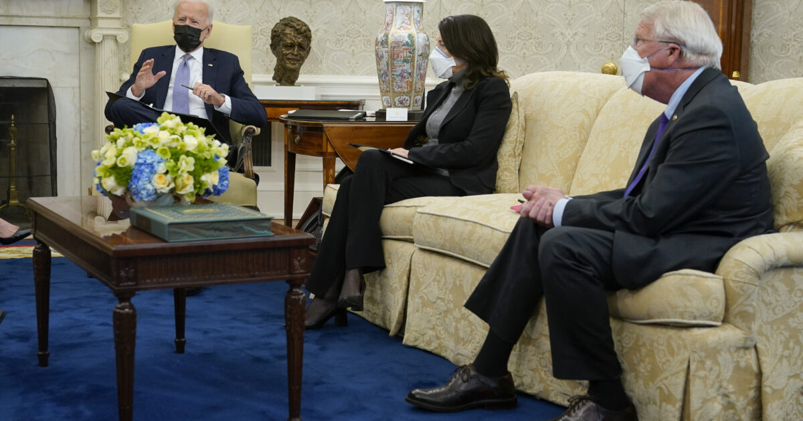
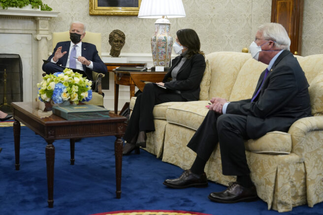

Sen.Wicker says corporate tax hikes on small businesses is job killer
Any business has a defined level of minimum profit.Past that the business has to either downsize or close.Taxes have to be paid and if taxes increase, the business has to cut costs elsewhere.The first cost cut is always personnel.Taxes always cost jobs.Econ 101.
Posted On: 2021-04-13T12:00:00
Posted By: realrepublican
Just two months past since an 'empty suit' placeholder entered into the Oval office, and President Trump's predictions about devastation in America already are coming true.Just read, 'NBC NEWS: Get ready for higher grocery bills for the rest of the year.'It's been reported: 'The monthly consumer price index, released Tuesday morning by the Bureau of Labor Statistics, showed a 0.6 percent increase in March, the largest one-month increase in nearly a decade.Over the past year, prices have increased 2.6 percent overall.Gas skyrocketed up 9.1 percent last month.Since February, fruits and vegetables have risen nearly 2 percent and the index for meats, poultry, fish and eggs have risen 0.4 percent, according to the government figures.Outside a Long Island, New York, supermarket, shopper John Kermaj said he’s seen prices rising in just the past two months. '
We used to buy this stuff for $30.Now it's $60, ' he said.'And recall that Biden himself publicly predicted just before his 'inauguration' in mid January, '
the darkest days are ahead for America '.What a grim difference with a bright future offered by President Trump's MAGA policies advancement to Keep America Safe and Secure, Prosperous and UNITED, and Great for years to come.
Posted On: 2021-04-13T14:04:00
Posted By: Alex15
When President Trump slapped tariffs on imports from China, the democrats were caterwauling how it was going cost consumers.Yet the DNC wants to raise taxes on U.S. businesses [like they will not pass the increase onto consumers] and lower the taxes on China.This is another example of the DNC’s loyalty to China over the U.S. People.
Posted On: 2021-04-13T12:01:00
Posted By: Troy Dynes
Biden doesn't know how jobs work in the private sector.Biden has been a leech on the American taxpayer his whole life.He couldn't create an authentic private sector job unless it was paid for with tax dollars from us.
Posted On: 2021-04-13T14:18:00
Posted By: Forbidden Planet
Of course it is lol.Some of these small business owners don't even pay themselves yet and are now confronted with gut wrenching taxes and significan't wage increases.The only option is to lean out the costs, fire some people, and pray you survive.Many won't though and will just fold instantly.What a disaster.Have these guys taken econ 101 yet?
Posted On: 2021-04-13T12:39:00
Posted By: TriggerhappyM@
I'm the only job killer here and tax hikes is just one of my tactics.
Posted On: 2021-04-13T11:13:00
Posted By: Job Killer
You're on track for skyrocketing unemployment coupled with hyper-inflation.
Posted On: 2021-04-13T11:40:00
Posted By: Hillary's Hitman
Or you are fear forecasting
Posted On: 2021-04-13T11:45:00
Posted By: golforfight
Why is it, the people who can not run a successful business are those in Washington, telling everybody else what to do?These clowns in the Congress and Senate have no idea what it takes to run a profitable business.Every man jack of them would bankrupt a business in a very short time.
Posted On: 2021-04-13T18:27:00
Posted By: D51S
Small businesses were already promised to foreign investors at local levels by corrupt local and state government employees and elected officials; same as 'infrastructure' spending at National and state/local Levels was over-promised for up front cash to individuals/organizations.When Biden promised $100 Trillion in Infrastructure/spending - that was the amount he/Dems promised would be handed over to China/foreign investors Dems are privately in debt to; to keep those debt collectors from coming after them personally.
Since there isn't enough money to hand over $100 Trillion in infrastructure projects quick enough, the other deals.... real estate to private businesses are part of the $100 Trillion promised ...China.
Infrastructure is defined as: The basic facilities, services, and installations needed for the functioning of a community or society, such as roads and communications systems, water and power lines, and public institutions including schools, post offices, and prisons.Under Biden: Infrastructure has already been expanded to include food and its delivery (Covid restrictions), art and entertainment, homes/housing and every other available scam they could sell government contracts to 'investors' to alleviate their own private debts being called.
Not intending to be mean toward the Senator, but: Senator Wicker and the others (understand they are trying, but not efficiently...) are talking down the problems Biden/Dems created.It's not a 'job killer' to hike taxes on small businesses; it's a way to put them out of business so the Dems' foreign investors can take those jobs over too.
Tell the truth about why Biden/Dems are giving the country away; people need to hear what's behind all of the insane efforts Biden/Dems are confronting the country with currently.
Posted On: 2021-04-13T16:14:00
Posted By: Iwasonetwo
Small businesses are not corporations.Look at the Senator's quote, 'corporate taxes on small business job creators.'
Think about that.He's saying big corporations create small businesses which then create jobs.Does that make sense to you?
Posted On: 2021-04-13T11:49:00
Posted By: Longe Johnson
An individual can incorporate.According to tax law any incorporated entity pays that tax.Most small businesses are incorporated as a liability prevention move.
Posted On: 2021-04-13T12:02:00
Posted By: realrepublican
Do we complain about corporations paying no federal taxes or that we shouldn't tax them?Pick a side.
Posted On: 2021-04-13T11:28:00
Posted By: Mike Pruitt
I say they pay a flat % Play all the games you want, loophole this or that.Your total gross income x 10%.Done
Posted On: 2021-04-13T11:44:00
Posted By: golforfight
Agree
Posted On: 2021-04-13T11:44:00
Posted By: Mike Pruitt
OK, you take the bottom.
Posted On: 2021-04-13T11:43:00
Posted By: Hillary's Hitman
Time to force corporations as well as all businesses to pay their share.
Whatever percent that is, it is better than the lawyers getting it.
Come up with the correct percentage and no loopholes.Flat tax and be done.
No one gets to whine anymore after that
Posted On: 2021-04-13T11:47:00
Posted By: golforfight
Wicker must have forgotten a little detail...
'75 percent of small businesses aren’t considered corporations but something called 'unincorporated pass-through entities.'This means that they pay the owner’s personal tax rate.'
Posted On: 2021-04-13T11:27:00
Posted By: divinity11
So, let's not refute what I said.
Just down-vote it because you don't like the truth.
Posted On: 2021-04-13T11:49:00
Posted By: divinity11
He is VERY misleading, at least in this OANN quote.He's lumping corporations and small businesses together by claiming that big corporations somehow create small businesses (they actually create and stifle small businesses), which in turn create jobs.This is a simple misleading quote where words are placed next to each other to fool the commoners, aka Trumptards.
Posted On: 2021-04-13T11:52:00
Posted By: Longe Johnson
Something tells me that if I did enough research, I'll find out that senator is an ALEC puppet.
My spidey senses are tingling.
Posted On: 2021-04-13T11:53:00
Posted By: divinity11
LOL!!!
He's an F' ing ALEC alumni!!!
I KNEW IT.
once again, my accuracy rating goes up
Posted On: 2021-04-13T12:27:00
Posted By: divinity11
And the Keystone Pipeline Workers are saying O'Biden Was a Job Killer himself.
Posted On: 2021-04-13T16:24:00
Posted By: Michael G.
From a small business owner ,,,,When a small business has to pay out an average of $55,000 a year to a government that took no risks,,gave no help in growing the business,, ,no handouts, put a gorilla sized tax collector in their face ,demanding pay up now--!!Think about that real picture,,---!!!Then Bloomberg, Boeing,GE,GM,Etc Many ,pay out ?NOTH?ING?NOTHING,,!!Just to be USA BASED,,WITH A REAL TO LIFE USA ARMED FORCES, TO BACK UP THESE COUNTRY CLUBBERS ,,??WHEN IN OTHER COUNTRIES ?THINK!!NOTHING-- PAID OUT!!These Fortune 500 companies engage a tax preparer, that employees a 100+ people ,.. while the IRS GORILLA in your face -demands pay up NOW to your Mr. Home Repair man !!There's got to be a minimumn tax based on company size and PROFITS !!A must!!Biden has the right idea,,,its about time!!Good idea Joe!!
Posted On: 2021-04-13T12:43:00
Posted By: John carlisle


Content Date: 2021-04-13
Download Date: 2021-04-16
Document ID: L0C049WXC